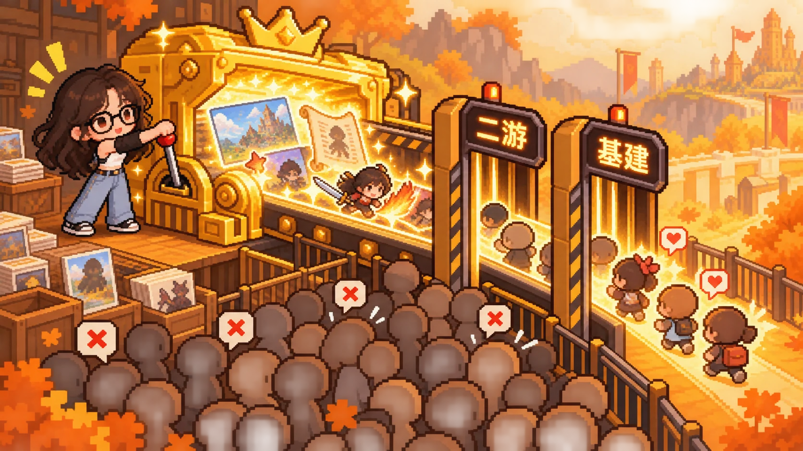
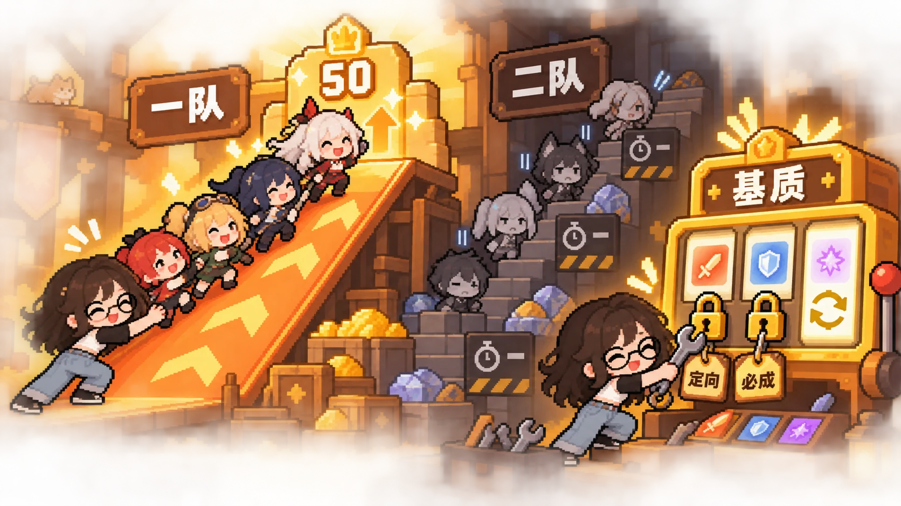
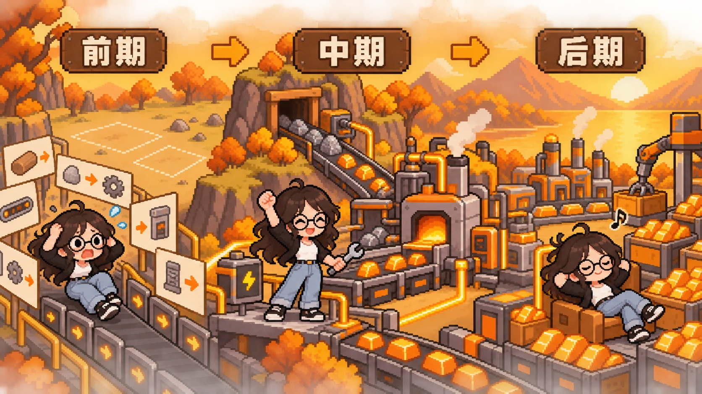

COMPETITOR RESEARCH
《明日方舟：终末地》OB侧产品复盘
品质与内容量站在行业前列，但差异化系统并没有自然转化成更宽的人群覆盖。
CORE FINDING
终末地完成了“二次元角色养成＋自动化工厂”的高规格组合，也凭借美术、内容量和多端品质获得强势开局；但基建教程、二队养成与卡池规则都把理解成本留给玩家。产品真正的挑战不是系统做得不够多，而是如何让不同时喜欢“二游”和“工厂”的人也能顺畅进入。
01
MARKET POSITIONING
高规格开局成立，但“大盘成功”与“人群扩张”仍是两件事
媒体估算显示，产品上线前两周全球全平台累计流水超过12亿元。多端结构同样鲜明：国服PC端占比接近60%，海外PC与PS合计约70%。这说明终末地不仅依赖移动端，还成功承接了更偏PC／主机体验的用户。
iOS排名呈现“首发高位、随后下滑、卡池更新再抬升”的常见曲线：国服免费榜首发第1，日服畅销榜峰值达到游戏榜第1；美服畅销榜峰值相对有限。高品质建立了强首发，但不同地区的长线承接能力差异明显。
优势
美术、建模、内容量和多端体验共同抬高了产品上限，形成清晰的新品辨识度。
边界
“二次元＋工厂”不是天然的大众组合；强差异化也可能同步缩窄核心人群。

02
IP CONTINUITY
世界观被继承，身份认同却在“再旅者”处发生断裂
终末地发生在《明日方舟》故事线约152—160年后，延续源石设定，并加入“超域、侵蚀、天使”等新概念。序章通过罗德岛、巴别塔花圃、爱国者雕像、特蕾西亚花朵与凯尔希台词等细节建立联结，但多数彩蛋轻量且容易错过，主线对原作角色的直接承接有限。
矛盾集中在“再旅者”：他们由源石中保存的干员信息实体化，继承外貌、部分记忆与技能，却否认自己是原角色。设定既想调用IP情感资产，又切断玩家熟悉的角色身份；同时暗示原角色已经死亡，因此引发明显抵触。继承外形不等于继承关系，IP承接首先要处理玩家的情感连续性。
03
GROWTH SYSTEM
单队体验受到保护，二队需求才暴露资源与随机性的压力
前期活动奖励基本保障一支四人队伍的成长，角色50级前无需频繁刷取升级材料；达到50级或开始培养第二队后，角色经验、武器经验、角色晋升与武器晋升四类体力资源同时产生缺口。大世界材料按当前单队需求尚可，但刷新较慢，也会拖慢二队成型。
装备词条固定、套装明确，并通过基建制造；真正承担长期随机成长的是武器基质。基质拥有三条词缀，工具可以把五选一收窄到三选一并指定一条，形成“获取随机、强化确定”的折中。角色叠花主要提升技能数值，没有把关键机制完全拆到高命座。
前期体验
资源集中、队伍单一，成长反馈连贯，玩家能较轻松推进主线与探索。
中后期压力
二队、武器与基质叠加后，体力、材料刷新与随机词缀开始共同放大成本。

04
BASE BUILDING
系统深度成立，问题在于教程只教“怎么点”而没有教“为什么”
基建以资源采集、加工与自动化产线为核心，成品同时流向探索、战斗、养成与据点系统，是终末地最完整的差异化系统。进入中期后，多基地分工、电力与物流配置、并行产线规划带来明显策略性与成就感，也为硬核玩家和UGC留下空间。
但新手期采用“教学副本＋强制引导”，大量文字和重复操作像在“上网课”。教程讲解具体步骤，却没有建立系统逻辑；回到空白基地后，玩家仍不知道从哪里开始。基建任务还会与主线跑图竞争节奏。后期乌陵区域的简化降低了日常负担，却也可能让深度玩家觉得系统被削弱。
优化重点不是删掉深度，而是把复杂度分层：先提供可直接运行的模板与即时正反馈，再逐步开放电力、物流和多线优化。

05
WELFARE & MONETIZATION
福利总量可观，但抽卡规则和货币层级提高了理解门槛
报告统计开服福利约139抽，由40抽新手池、60抽常驻池、27抽限定池与约6000玉组成，总量高于同期对比产品；但其中相当一部分是非限定资源，玩家感知与“总抽数”并不完全一致。主线与玩家等级相关的约80抽还要求持续推进，登录则在第3日赠送六星艾尔黛拉、第10日赠送对应武器。
角色池取消传统大小保底，改为30抽赠当期池10抽、60抽赠下期池10抽；赠送抽数不计入保底，当期UP保底不跨池。优点是当前UP会在后续两池作为歪出角色，且角色池可产出武器票；缺点是抽卡道具与货币种类多、规则不易解释，月卡30日仅折合约12抽，二队养成压力也会进一步推高付费感受。
49天通行证提供六星武器自选与成长材料，并允许每日补领最多3次双倍经验，属于对追赶体验较友好的设计；商店礼包则以中高价为主，低价入口较少。
结论
终末地不是内容不足，而是系统深度、IP身份与商业规则同时要求玩家理解。下一阶段最值得优化的是“入口”：降低基建初学成本、把二队压力提前可视化、简化卡池说明，并让IP角色关系比彩蛋更直接。
高品质带来高上限；真正决定人群宽度的，是复杂系统能否被温和地介绍给玩家。
数据与判断均整理自原始复盘文档。媒体估算、榜单排名与抽数统计不是官方口径；“查看原文”保留了原文中的数据曲线、系统图和商业化截图。